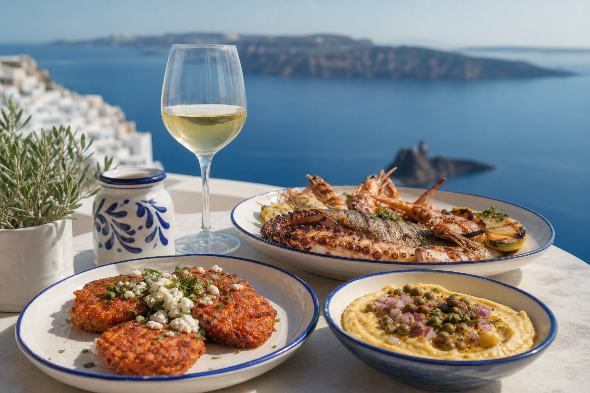
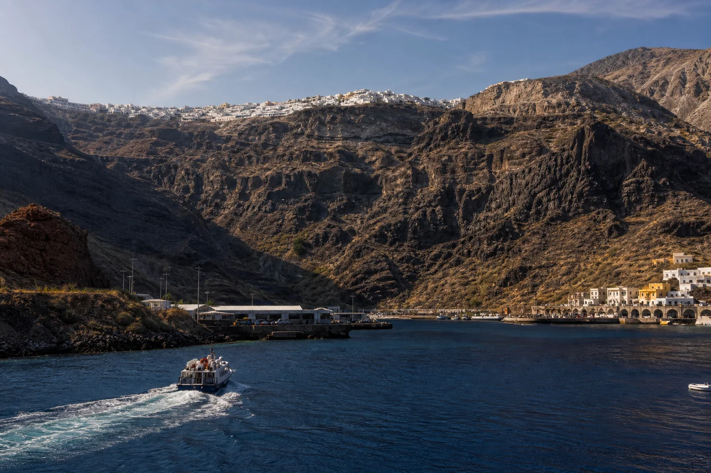
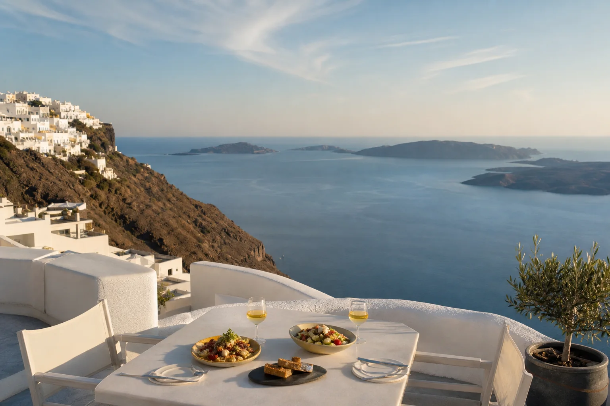

The blue domes
Cobalt church roofs, white lanes and bell towers set against the northern caldera.
Find the viewpoint →
Day 06 Thursday, 15 October 2026 · Santorini
Blue domes, volcanic cliffs and one carefully planned escape across the sea.
An early ferry from Heraklion gives us a full day for Oia, Fira and the caldera views in between.
Next chapter
Continue to Day Seven →Reach the terminal with the operator’s required buffer and keep tickets available offline. Exact check-in time remains provisional.
Travel north across open water; vessel, departure time and journey duration require final operator confirmation.
The ferry enters beneath layered volcanic cliffs, with white settlements visible along the rim above.
Use the pre-booked transfer or day-tour connection to avoid piecing together the island route after docking.
Walk the lanes around Oia’s churches, caldera viewpoints and whitewashed terraces before midday foot traffic builds.
Travel along the caldera rim to the island capital, leaving enough time for lunch and the return transfer.
Order Santorini produce, seafood and a glass of Assyrtiko at a terrace with a clear view—and a clear bill policy.
Use the remaining time for the Orthodox Metropolitan Cathedral area, caldera paths and independent browsing.
Leave Fira according to the transfer provider’s instructions; the cliff road and port traffic can slow considerably.
Board the confirmed return sailing and reach the Heraklion base in the evening. Exact timing remains schedule-dependent.
Cobalt church roofs, white lanes and bell towers set against the northern caldera.
Find the viewpoint →The flooded volcanic basin stretches between Santorini, Thirassia and the central islets.
Open a viewpoint →Local dishes, Assyrtiko and the practical pleasure of sitting down before the return transfer.
Find lunch →Taste of the day
ΣΑΝΤΟΡΙΝΗ
Order tomato fritters, smooth yellow split-pea fava and fresh seafood, then try an Assyrtiko from the island’s volcanic vineyards. Lunch has a return-ferry deadline, which is useful protection against the third round of “one more plate.”
Know before you go
The day trip is part of the core plan. Exact ferry times, vessel and island transfers await the final October schedule and bookings.
Arrange a transfer or guided day-tour link covering Athinios, Oia, Fira and the return port.
Follow the provider’s collection time and allow for cliff-road traffic at Athinios.
Location overview
The island route starts below the cliffs at Athinios, climbs north to Oia, then returns south to Fira and the port. Transfer timings must work backward from the confirmed ferry.
Open the island route →Three perspectives

